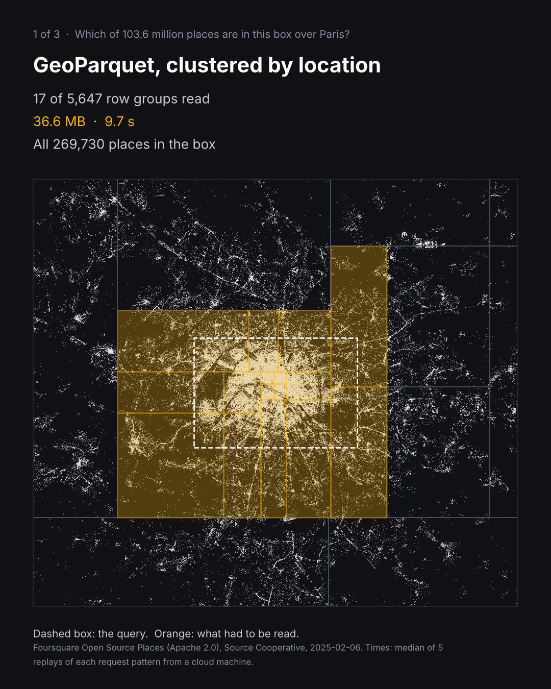
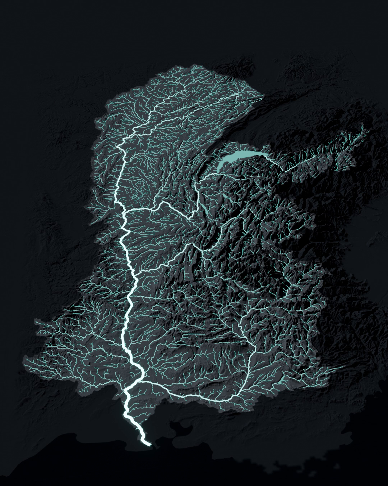
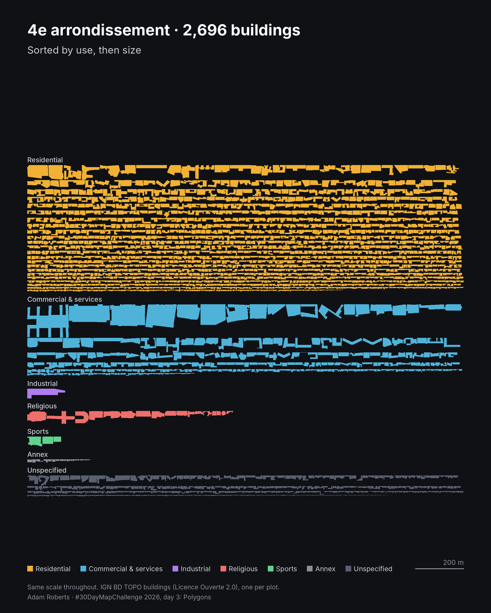
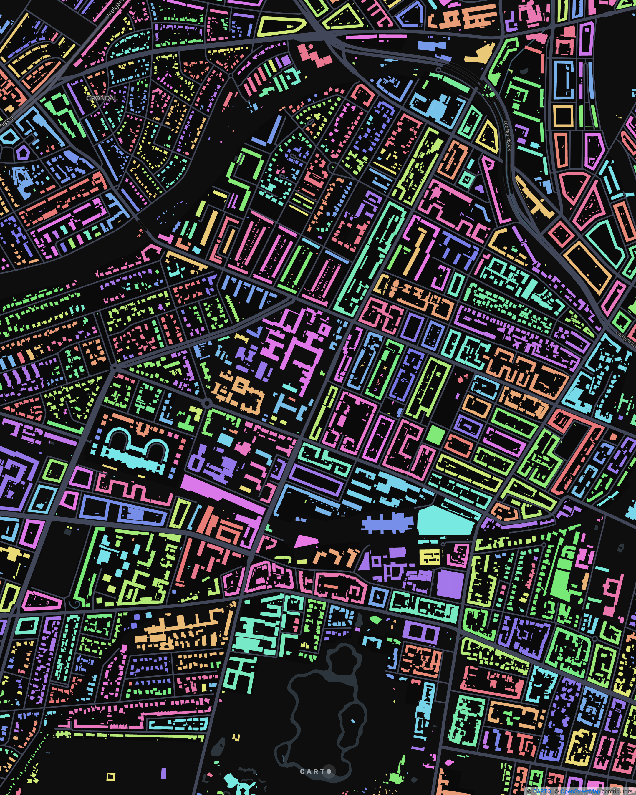

Day 1 · Points · 1 November
103 million places, one box over Paris: what three formats had to download

Day 2 · Lines · 2 November
26,297 km of lines that all end in one place: the Rhône, traced upstream from the sea

Day 3 · Polygons · 3 November
The 2,696 buildings of Paris's 4e, lifted off the map and sorted by use and size

Day 4 · Clusters · 4 November
Every building in Denmark grouped into settlements at 10 m: 4.16 million footprints in 5.3 minutes, inside Snowflake